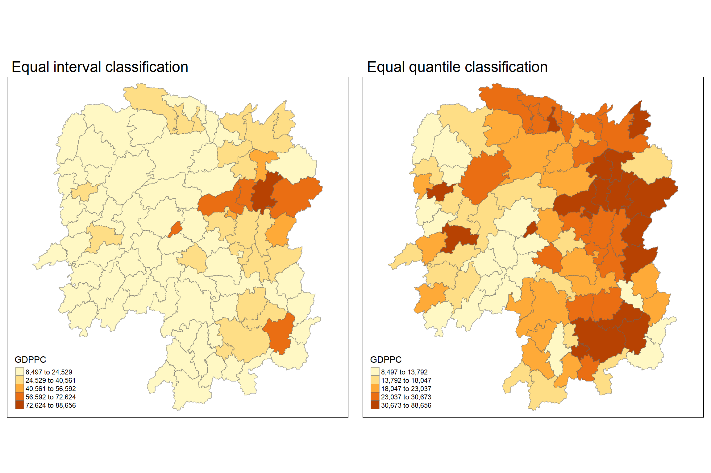

pacman::p_load(sf, spdep, tmap, tidyverse)Hands-on Exercise 5a: Spatial Weights and Applications
1 Overview
In this hands-on exercise, we will learn how to compute Global Measures of Spatial Autocorrelation (GMSA) by using spdep package. By the end to this hands-on exercise, we will be able to:
- import geospatial data using appropriate function(s) of sf package,
- import csv file using appropriate function of readr package,
- perform relational join using appropriate join function of dplyr package,
- compute Global Spatial Autocorrelation (GSA) statistics by using appropriate functions of spdep package,
- plot Moran scatterplot,
- compute and plot spatial correlogram using appropriate function of spdep package.
- provide statistically correct interpretation of GSA statistics.
2 Getting Started
2.1 The Research Question
In the realm of spatial planning, achieving a balanced distribution of development across regions is crucial. Our analysis will determine the uniformity of development distribution within a specified area. If uneven, we will investigate potential spatial clustering and identify their locations.
We will specifically analyze the spatial distribution of GDP per capita within Hunan Provice, People Republic of China.
2.2 The Study Area and Data
Two data sets will be used in this hands-on exercise, they are:
- Hunan province administrative boundary layer at county level. This is a geospatial data set in ESRI shapefile format.
- Hunan_2012.csv: This csv file contains selected Hunan’s local development indicators in 2012.
2.3 Setting the Analytical Toolls
Before we get started, we need to ensure that spdep, sf, tmap and tidyverse packages of R are currently installed in your R.
- sf is use for importing and handling geospatial data in R,
- tidyverse is mainly use for wrangling attribute data in R,
- spdep will be used to compute spatial weights, global and local spatial autocorrelation statistics, and
- tmap will be used to prepare cartographic quality chropleth map.
The code chunk below is used to perform the following tasks:
- creating a package list containing the necessary R packages,
- checking if the R packages in the package list have been installed in R,
- if they have yet to be installed, RStudio will installed the missing packages,
- launching the packages into R environment.
3 Getting the Data Into R Environment
In this section, you will learn how to bring a geospatial data and its associated attribute table into R environment. The geospatial data is in ESRI shapefile format and the attribute table is in csv format.
3.1 Import shapefile into r environment
Import the Hunan shapefile as an sf simple features object using the st_read() function from the sf package.
The code chunk below uses st_read() of sf package to import Hunan shapefile into R. The imported shapefile will be simple features Object of sf.
hunan <- st_read(dsn = "data/geospatial",
layer = "Hunan")Reading layer `Hunan' from data source
`C:\zjho008\ISSS626-GAA\Hands-on_Ex\Hands-on_Ex05\data\geospatial'
using driver `ESRI Shapefile'
Simple feature collection with 88 features and 7 fields
Geometry type: POLYGON
Dimension: XY
Bounding box: xmin: 108.7831 ymin: 24.6342 xmax: 114.2544 ymax: 30.12812
Geodetic CRS: WGS 843.2 Import csv file into r environment
Next, we will import Hunan_2012.csv into R by using read_csv() of readr package. The output is R data frame class.
hunan2012 <- read_csv("data/aspatial/Hunan_2012.csv")Rows: 88 Columns: 29
── Column specification ────────────────────────────────────────────────────────
Delimiter: ","
chr (2): County, City
dbl (27): avg_wage, deposite, FAI, Gov_Rev, Gov_Exp, GDP, GDPPC, GIO, Loan, ...
ℹ Use `spec()` to retrieve the full column specification for this data.
ℹ Specify the column types or set `show_col_types = FALSE` to quiet this message.3.3 Performing relational join (Data Merging)
The code chunk below will be used to update the attribute table of hunan’s SpatialPolygonsDataFrame with the attribute fields of hunan2012 dataframe. This is performed by using left_join() of dplyr package.
hunan <- left_join(hunan,hunan2012) %>%
select(1:4, 7, 15)Joining with `by = join_by(County)`3.4 Mapping Regional Indicators
Now, we are going to prepare a basemap and a choropleth map showing the distribution of GDPPC 2012 by using qtm() of tmap package.
equal <- tm_shape(hunan) +
tm_fill("GDPPC",
n = 5,
style = "equal") +
tm_borders(alpha = 0.5) +
tm_layout(main.title = "Equal interval classification")
quantile <- tm_shape(hunan) +
tm_fill("GDPPC",
n = 5,
style = "quantile") +
tm_borders(alpha = 0.5) +
tm_layout(main.title = "Equal quantile classification")
tmap_arrange(equal,
quantile,
asp=1,
ncol=2)
4 Calculating Global Spatial Autocorrelation
4.1 Global Measures of Spatial Autocorrelation
In this section, it will show how to compute global spatial autocorrelation statistics and to perform spatial complete randomness test for global spatial autocorrelation.
4.2 Computing Contiguity Spatial Weights
Before we can compute the global spatial autocorrelation statistics, we need to construct a spatial weights of the study area. The spatial weights is used to define the neighbourhood relationships between the geographical units (i.e. county) in the study area.
In the code chunk below, poly2nb() of spdep package is used to compute contiguity weight matrices for the study area. This function builds a neighbours list based on regions with contiguous boundaries. If you look at the documentation you will see that you can pass a “queen” argument that takes TRUE or FALSE as options. If you do not specify this argument the default is set to TRUE, that is, if you don’t specify queen = FALSE this function will return a list of first order neighbours using the Queen criteria.
More specifically, the code chunk below is used to compute Queen contiguity weight matrix.
wm_q <- poly2nb(hunan,
queen=TRUE)
summary(wm_q)Neighbour list object:
Number of regions: 88
Number of nonzero links: 448
Percentage nonzero weights: 5.785124
Average number of links: 5.090909
Link number distribution:
1 2 3 4 5 6 7 8 9 11
2 2 12 16 24 14 11 4 2 1
2 least connected regions:
30 65 with 1 link
1 most connected region:
85 with 11 linksThe summary report above shows that there are 88 area units in Hunan. The most connected area unit has 11 neighbours. There are two area units with only one neighbours.
4.3 Row-standardised weights matrix (Standardizing Weights)
Next, we need to assign weights to each neighboring polygon. In our case, each neighboring polygon will be assigned equal weight (style=“W”). This is accomplished by assigning the fraction 1/(#ofneighbors) to each neighboring county then summing the weighted income values. While this is the most intuitive way to summaries the neighbors’ values it has one drawback in that polygons along the edges of the study area will base their lagged values on fewer polygons thus potentially over- or under-estimating the true nature of the spatial autocorrelation in the data. For this example, we’ll stick with the style=“W” option for simplicity’s sake but note that other more robust options are available, notably style=“B”.
rswm_q <- nb2listw(wm_q,
style="W",
zero.policy = TRUE)
rswm_qCharacteristics of weights list object:
Neighbour list object:
Number of regions: 88
Number of nonzero links: 448
Percentage nonzero weights: 5.785124
Average number of links: 5.090909
Weights style: W
Weights constants summary:
n nn S0 S1 S2
W 88 7744 88 37.86334 365.9147
What can we learn from the code chunk above?
- The input of
nb2listw()must be an object of class nb. The syntax of the function has two major arguments, namely style and zero.poly. - style can take values “W”, “B”, “C”, “U”, “minmax” and “S”. B is the basic binary coding, W is row standardised (sums over all links to n), C is globally standardised (sums over all links to n), U is equal to C divided by the number of neighbours (sums over all links to unity), while S is the variance-stabilizing coding scheme proposed by Tiefelsdorf et al. 1999, p. 167-168 (sums over all links to n).
- If zero policy is set to TRUE, weights vectors of zero length are inserted for regions without neighbour in the neighbours list. These will in turn generate lag values of zero, equivalent to the sum of products of the zero row t(rep(0, length=length(neighbours))) %*% x, for arbitrary numerical vector x of length length(neighbours). The spatially lagged value of x for the zero-neighbour region will then be zero, which may (or may not) be a sensible choice.
5 Global Measures of Spatial Autocorrelation: Moran’s I
In this section, you will learn how to perform Moran’s I statistics testing by using moran.test() of spdep.
5.1 Maron’s I test
The code chunk below performs Moran’s I statistical testing using moran.test() of spdep.
moran.test(hunan$GDPPC,
listw=rswm_q,
zero.policy = TRUE,
na.action=na.omit)
Moran I test under randomisation
data: hunan$GDPPC
weights: rswm_q
Moran I statistic standard deviate = 4.7351, p-value = 1.095e-06
alternative hypothesis: greater
sample estimates:
Moran I statistic Expectation Variance
0.300749970 -0.011494253 0.004348351 Question: What statistical conclusion can you draw from the output above?
5.2 Computing Monte Carlo Moran’s I (Permutation Testing)
The code chunk below performs permutation test for Moran’s I statistic by using moran.mc() of spdep. A total of 1000 simulation will be performed.
set.seed(1234)
bperm= moran.mc(hunan$GDPPC,
listw=rswm_q,
nsim=999,
zero.policy = TRUE,
na.action=na.omit)
bperm
Monte-Carlo simulation of Moran I
data: hunan$GDPPC
weights: rswm_q
number of simulations + 1: 1000
statistic = 0.30075, observed rank = 1000, p-value = 0.001
alternative hypothesis: greaterQuestion: What statistical conclustion can you draw fro mthe output above?
5.3 Visualising Monte Carlo Moran’s I (Distribution Visualization)
It is always a good practice for us the examine the simulated Moran’s I test statistics in greater detail. This can be achieved by plotting the distribution of the statistical values as a histogram by using the code chunk below.
In the code chunk below hist() and abline() of R Graphics are used.
mean(bperm$res[1:999])[1] -0.01504572var(bperm$res[1:999])[1] 0.004371574summary(bperm$res[1:999]) Min. 1st Qu. Median Mean 3rd Qu. Max.
-0.18339 -0.06168 -0.02125 -0.01505 0.02611 0.27593 hist(bperm$res,
freq=TRUE,
breaks=20,
xlab="Simulated Moran's I")
abline(v=0,
col="red") 
Question: What statistical observation can you draw fro mthe output above?
Challenge: Instead of using Base Graph to plot the values, plot the values by using ggplot2 package.
6 Global Measures of Spatial Autocorrelation: Geary’s C (Statistical Testing)
In this section, you will learn how to perform Geary’s C statistics testing by using appropriate functions of spdep package.
6.1 Geary’s C test
The code chunk below performs Geary’s C test for spatial autocorrelation by using geary.test() of spdep.
geary.test(hunan$GDPPC, listw=rswm_q)
Geary C test under randomisation
data: hunan$GDPPC
weights: rswm_q
Geary C statistic standard deviate = 3.6108, p-value = 0.0001526
alternative hypothesis: Expectation greater than statistic
sample estimates:
Geary C statistic Expectation Variance
0.6907223 1.0000000 0.0073364 Question: What statistical conclusion can you draw from the output above?
6.2 Computing Monte Carlo Geary’s C
The code chunk below performs permutation test for Geary’s C statistic by using geary.mc() of spdep.
set.seed(1234)
bperm=geary.mc(hunan$GDPPC,
listw=rswm_q,
nsim=999)
bperm
Monte-Carlo simulation of Geary C
data: hunan$GDPPC
weights: rswm_q
number of simulations + 1: 1000
statistic = 0.69072, observed rank = 1, p-value = 0.001
alternative hypothesis: greaterQuestion: What statistical conclusion can you draw from the output above?
6.3 Visualising the Monte Carlo Geary’s C
Next, we will plot a histogram to reveal the distribution of the simulated values by using the code chunk below.
mean(bperm$res[1:999])[1] 1.004402var(bperm$res[1:999])[1] 0.007436493summary(bperm$res[1:999]) Min. 1st Qu. Median Mean 3rd Qu. Max.
0.7142 0.9502 1.0052 1.0044 1.0595 1.2722 hist(bperm$res, freq=TRUE, breaks=20, xlab="Simulated Geary c")
abline(v=1, col="red") 
Question: What statistical observation can you draw from the output?
7 Spatial Correlogram
Spatial correlograms are great to examine patterns of spatial autocorrelation in your data or model residuals. They show how correlated are pairs of spatial observations when you increase the distance (lag) between them - they are plots of some index of autocorrelation (Moran’s I or Geary’s c) against distance.Although correlograms are not as fundamental as variograms (a keystone concept of geostatistics), they are very useful as an exploratory and descriptive tool. For this purpose they actually provide richer information than variograms.
7.1 Compute Moran’s I correlogram
In the code chunk below, sp.correlogram() of spdep package is used to compute a 6-lag spatial correlogram of GDPPC. The global spatial autocorrelation used in Moran’s I. The plot() of base Graph is then used to plot the output.
MI_corr <- sp.correlogram(wm_q,
hunan$GDPPC,
order=6,
method="I",
style="W")
plot(MI_corr)
Plotting the output alone may not provide a comprehensive interpretation, as not all autocorrelation values carry statistical significance. Therefore, it’s crucial to review the complete analysis report. The detailed results can be accessed by executing the following code chunk, which prints out the entire analysis:
print(MI_corr)Spatial correlogram for hunan$GDPPC
method: Moran's I
estimate expectation variance standard deviate Pr(I) two sided
1 (88) 0.3007500 -0.0114943 0.0043484 4.7351 2.189e-06 ***
2 (88) 0.2060084 -0.0114943 0.0020962 4.7505 2.029e-06 ***
3 (88) 0.0668273 -0.0114943 0.0014602 2.0496 0.040400 *
4 (88) 0.0299470 -0.0114943 0.0011717 1.2107 0.226015
5 (88) -0.1530471 -0.0114943 0.0012440 -4.0134 5.984e-05 ***
6 (88) -0.1187070 -0.0114943 0.0016791 -2.6164 0.008886 **
---
Signif. codes: 0 '***' 0.001 '**' 0.01 '*' 0.05 '.' 0.1 ' ' 1Question: What statistical observation can you draw from the plot above?
Note
From the output of the spatial correlogram for Hunan GDP per capita, which uses Moran’s I method, we can observe several key statistical points:
Lag 1 and Lag 2 Correlations: The Moran’s I values for the first and second lags (0.300750 and 0.206004 respectively) are positive and highly significant (p-value < 0.01, denoted by ***), indicating a strong positive spatial autocorrelation at these distances. This suggests that regions that are close together (up to two lags away) tend to have similar GDP per capita values.
Significance of Autocorrelation: The positive autocorrelation at Lag 1 and Lag 2 implies that areas with higher GDP per capita are clustered together, as are areas with lower GDP per capita.
Lag 3 to Lag 6 Correlations: The values gradually decrease and even become negative by Lag 6 (-0.118070). The negative value at Lag 6 is statistically significant (p-value < 0.05, denoted by **), indicating that regions further apart start to exhibit dissimilar GDP per capita values, a phenomenon known as negative spatial autocorrelation.
Statistical Significance: Lags 1, 2, 4, and 6 show statistically significant autocorrelation. Particularly, Lags 1 and 2 show strong and highly significant positive spatial autocorrelation, while Lags 4 and 6 show statistically significant but weaker negative autocorrelation.
These observations highlight the presence of spatial patterns in GDP per capita across Hunan, with nearby regions being more similar than those further apart, transitioning to dissimilarity at greater distances.
7.2 Compute Geary’s C correlogram and plot
In the code chunk below, sp.correlogram() of spdep package is used to compute a 6-lag spatial correlogram of GDPPC. The global spatial autocorrelation used in Geary’s C. The plot() of base Graph is then used to plot the output.
GC_corr <- sp.correlogram(wm_q,
hunan$GDPPC,
order=6,
method="C",
style="W")
plot(GC_corr)
Similar to the previous step, we will print out the analysis report by using the code chunk below.
print(GC_corr)Spatial correlogram for hunan$GDPPC
method: Geary's C
estimate expectation variance standard deviate Pr(I) two sided
1 (88) 0.6907223 1.0000000 0.0073364 -3.6108 0.0003052 ***
2 (88) 0.7630197 1.0000000 0.0049126 -3.3811 0.0007220 ***
3 (88) 0.9397299 1.0000000 0.0049005 -0.8610 0.3892612
4 (88) 1.0098462 1.0000000 0.0039631 0.1564 0.8757128
5 (88) 1.2008204 1.0000000 0.0035568 3.3673 0.0007592 ***
6 (88) 1.0773386 1.0000000 0.0058042 1.0151 0.3100407
---
Signif. codes: 0 '***' 0.001 '**' 0.01 '*' 0.05 '.' 0.1 ' ' 1